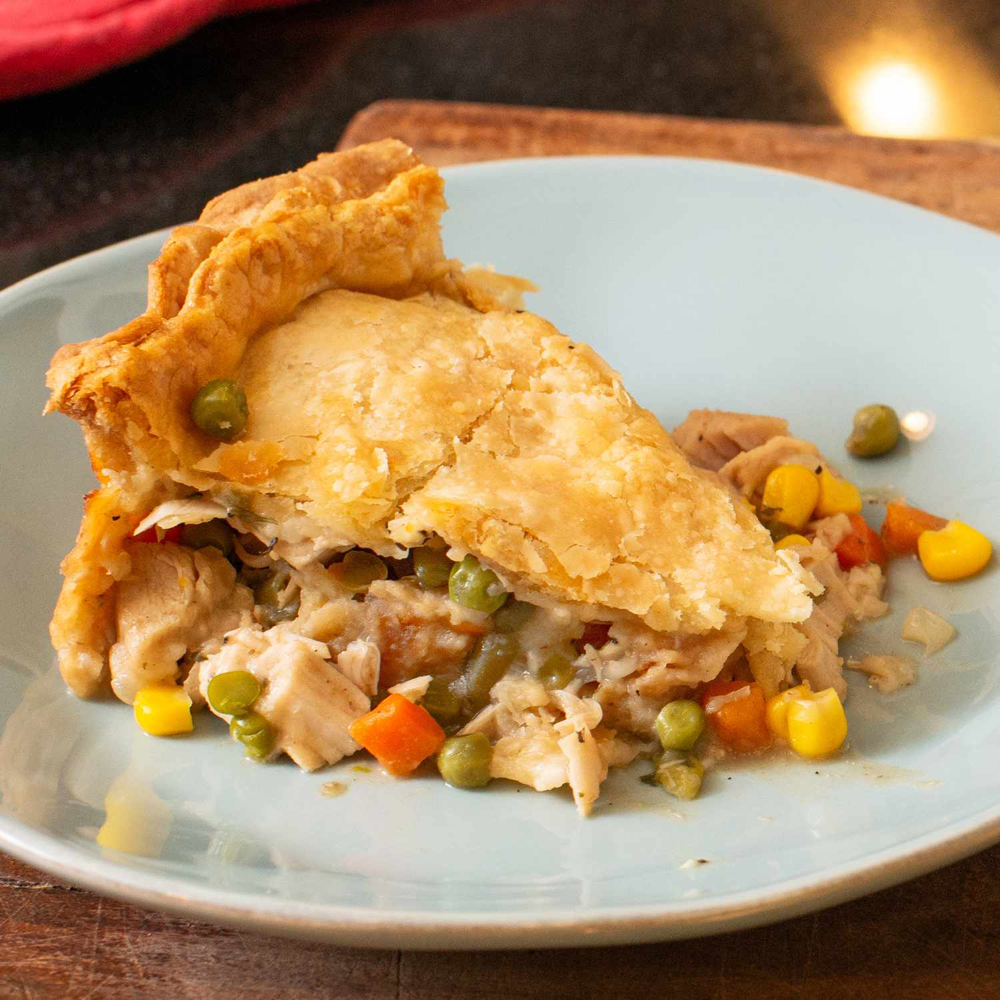

Turkey Pot Pie

Description
This turkey pot pie recipe made with leftover turkey from your holiday dinner makes two 9-inch pies. Chunks of white and dark turkey meat are mixed with peas, carrots, and beans in a creamy sauce that screams comfort food. Using ready-made pastry dough and frozen vegetables cuts down on prep time. These leftover turkey pot pies are so delicious, they don't last long!
Ingredients
- Frozen veggies: You'll need frozen peas and carrots and frozen green beans.
- Fresh veggies: Celery and onion add fresh flavor and texture.
- Butter and flour: Sauté the onion in butter, then add all-purpose flour to make a roux.
- Seasonings: This turkey pot pie is seasoned with salt, pepper, onion powder, and Italian seasoning.
- Broth: Use store-bought or homemade chicken broth or turkey broth.
- Milk: Use your favorite milk to create a creamy filling.
- Turkey: Of course, you'll need leftover turkey!
- Pie crust: Use a store-bought double pie crust or try our Butter Flaky Pie Crust.
Directions
- Cook the frozen vegetables and celery.
- Saute the onions in butter, then whisk in the flour and seasonings.
- Whisk in the broth and milk to thicken the sauce.
- Stir in the cooked vegetables and turkey.
- Pour the filling into the prepared pie crust.
- Cover with the remaining crust and bake.